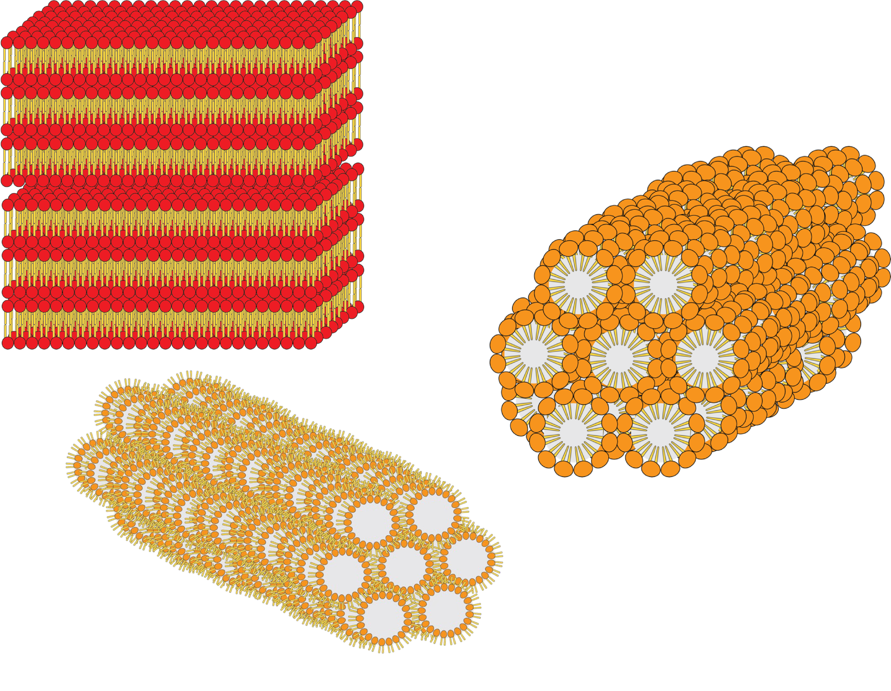
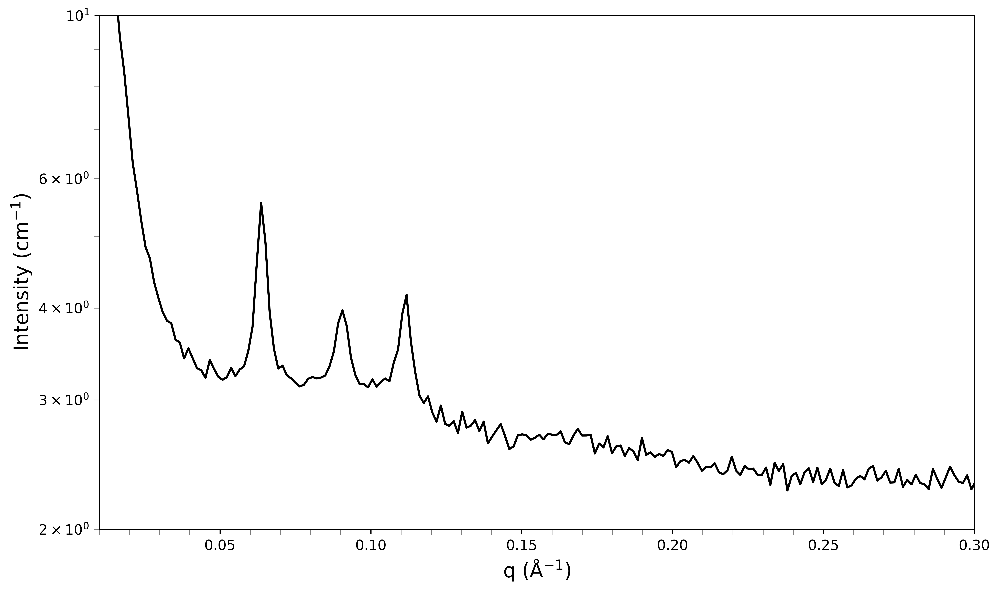
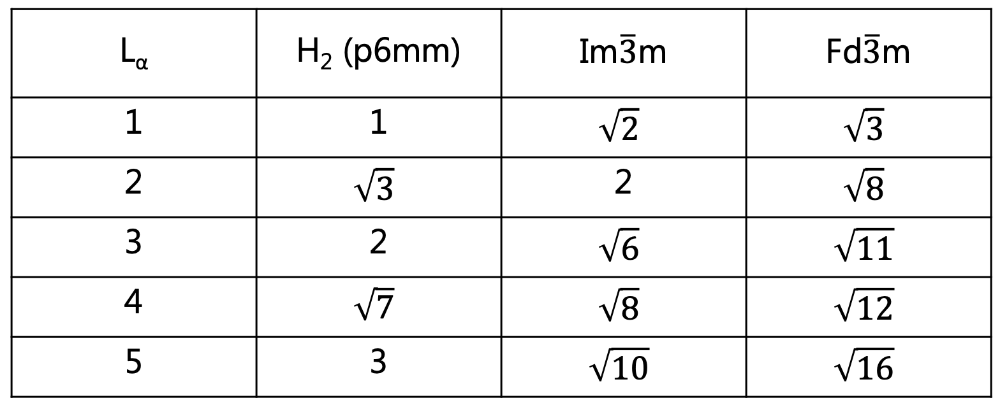
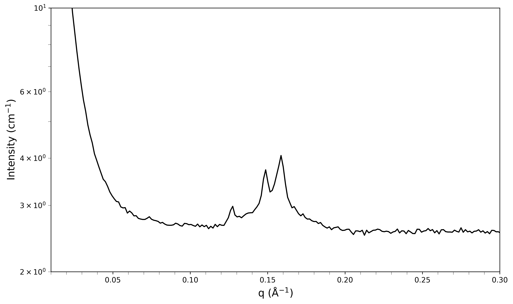
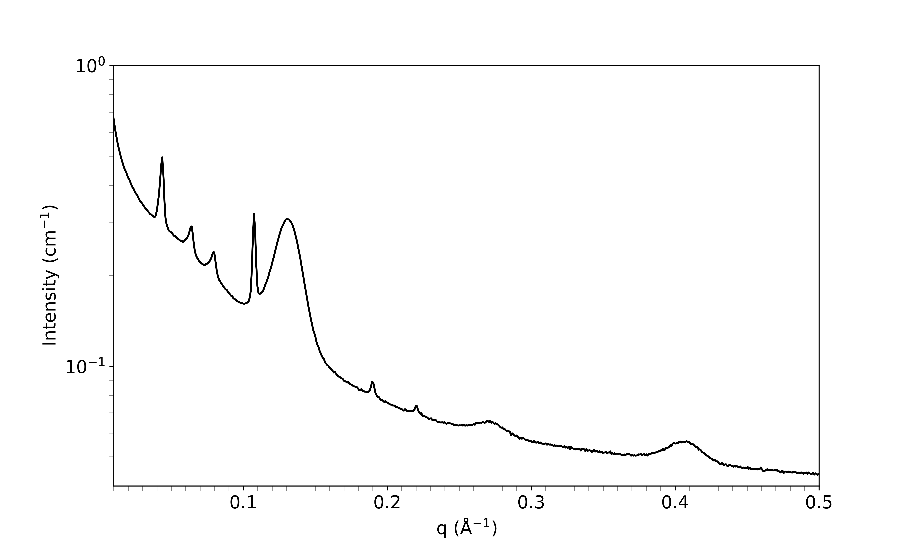

Home
Tutorial: Liquid crystals
Tutorial contributors: Shinji Kihara & Jacob Judas Kain Kirkensgaard

Lipid molecules can adopt many liquid crystalline phases within biological settings (e.g., lamellar, hexagonal, and inverse hexagonal phases).
Before you start
- Knowledge of Bragg's law and basic understanding of molecular self-assembly are assumed.
Learning outcomes
At the end of this tutorial you are expected to be able to:- Identify some of the liquid crystalline structures within soft matter research.
Introductory remarks
Many biological amphiphilic molecules (a prominent example being lipids) can self-assemble into interesting geometries. In this tutorial, you are tasked to identify some of the major mesophases which lipids form.
Part 1: Identifying a single phase system
Lipids are known to form liquid crystalline phases even in the food we consume (Salentinig et al., ACS Nano 2013). Small-angle scattering techniques provide insight into specific types of phases which lipids can form.
Scenario: you measured a mixture of lipids at a synchrotron SAXS. Work your way through to identify which phase(s) are present in your sample. In the figure below, you can immediately identify three diffraction peaks positioned at q = 0.062, 0.088, and 0.112 Å-1.

SAXS pattern of a lipid sample A.

Table 1. Relative postions (on the q-axis) of Bragg peaks in four different lipid phases.

Table 2. Theoretical positions of Bragg peaks ($q$ values), relating to different phases, assuming first-order peak at $q=0.062$ Å-1. Give a try at filling the table for the other phases. You should be able to find the Im3m phase to be the hit, where you have the match between the expected $q$-values and the actual positions of the diffraction peaks.
Challenges
In the challenges, you should identify unknown phase(s) from SAXS data (try solving the challenges without using the hints)- Challenge 1: Identify the phase(s) from the SAXS pattern below (note that the first diffraction peak is positioned at 0.072 Å-1).

SAXS pattern of a lipid sample B. - Challenge 2: Identify the liquid phase(s) from the SAXS pattern below (first hint,second hint).

SAXS pattern of a lipid sample C.
Feedback
Help us improve the tutorials by- Reporting issues and bugs via our GitHub page. This could be typos, dead links etc., but also insufficient information or unclear instructions.
- Suggesting new tutorials/additions/improvements in the SAStutorials forum.
- Posting or answering questions in the SAStutorials forum.